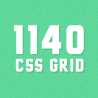
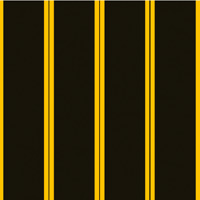
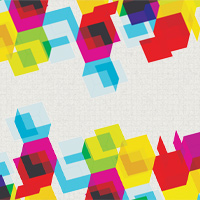
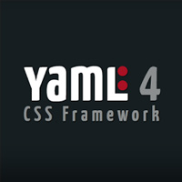

Sunum Hakkında
- Sunum Google IO 2012 ile hazırlanmıştır.
- Sol alt köşesinde "‡" işareti olan slidelarda "p" tuşuna basarak konuşmacı notlarını görebilirsiniz
- "f" tuşu sunumu tam ekran olarak açar
- "w" tuşu sunumu widescreen/normal screen olarak genişliğini değiştirir
- "o" tuşu, ön izleme moduna geçirir
CSS Kısa Tarihçesi
- 1980lerde SGML
- 1996'da resmi olarak CSS1 yayınlandı.
- Font ve metin sitillendirme
- Hizalama ve elemanlar arasında boşluklar (margin, padding, position)
- 1998'de CSS2, CSS1e unutulan kısımları eklemek için yayınlandı.
- CSS3 geliştirilmeye 1998'e başlandı. Hala devam ediyor.
CSS Frameworkler
- Hızlı prototipleme
- Hazır sayfa elemanları
- Responsive desteği
- Basit grid sistemleri: 960gs, 1140 Grid, Goldengrid, Responsive Grid vs.
- 
- 
- 
- Tam sistemler: Bootstrap, Foundation, Skeleton, YAML vs.
- 
Frameworkler Yetersiz Kalırsa
- Değişkenlere ihtiyacımız olursa
- Ya da fonksiyonlar
- Ya da modüler bir yapıya
- Ya da birden fazla tema ile çalışıyorsanız
- Biri çıkıp
- CSS için değişken oluşturabilirsiniz
- Tekrar kullanılabilir/çağrılabilir fonksiyonlar yazabilirsiniz
- Kodlarınızı küçük dosyalara bölüp çalışabilirsiniz
CSS Preprocessors (Önişlemciler)
SASS, LESS
CSS Preprocessors Nedir?
- CSS'in kısıtlamaları olmadan CSS yazmak
- Aynı class (sınıf) tanımını tekrar tekrar yazmadan tanımlamaları yapmak
- Değişkenler tanımlayabilmek
- Parametre alabilen fonksiyonlar (mixin) tanımlayabilmek
- Eforu azaltıp, doğru ve hızlı şekilde "unobtrusive" CSS yazabilmek


Syntax
/** SCSS ve LESS **/
h1 {
color: #0982C1;
}
/** SASS **/
h1
color: #0982C1;
Değişkenler
div {
color: blue;
}
Nesting
ul { margin: 0; }
ul li { float: left; }
ul a { color: #999; }
ul a:hover { color: #229ed3; }
Mixins
h1 { border: 1px solid #ddd; }
h1:hover { border-color: #999; }
Mixins
Parametre ile kullanım
@mixin bordered($width: 1px, $color: blue) {
border: $width solid $color;
}
h1 { @include bordered(2px, #ddd); }
.bordered(@width: 1px, @color: blue) {
border: @width solid @color;
}
h1 { .bordered(2px, #ddd); }
h1 { border: 2px solid #ddd; }
Selector Inheritance
.bordered {
border: 1px solid #ddd;
}
h1 {
@extend .bordered;
color: #999;
}
.bordered, h1 {
border: 1px solid #ddd;
}
h1 { color: #999; }
Renk İşlemleri
Hem SASS hem de LESS renkler ile alakalı çeşitli işlemler yapmaya imkan vermektedir. Bazıları aşağıdaki gibidir
Koşullu Karşılaştırmalar (If/Else)
@if lightness($color) > 30% {
background-color: black;
}
@else {
background-color: white;
}
.mixin (@color) when (lightness(@color) > 30%) {
background-color: black;
}
.mixin (@color) when (lightness(@color) =< 30%) {
background-color: white;
}
Döngüler (Loops)
LESS'in doğrudan döngü desteği yoktur. Ama mixinler içinde recursion tanımlanarak kısıtlı da olsa döngü oluşturulabilir.
@for $i from 1px to 10px {
.border-#{i} {
border: $i solid blue;
}
}
Namespace
Namespace ile bir mixin ya da sınıf içinde bir alt tanımı çağırabilmeyi kastediyoruz. SASS'ın desteği bulunmuyor.
#bundle () {
.red { background-color: red }
.green { background-color: green }
}
.foo {
#bundle > .red;
}
.foo {
background-color: red;
}
Matematiksel İşlemler
Dosya Çağırma (Import)
- Hem SASS, hem de LESS import yapabilir
- SASS: Parça dosya desteği.
CSS Çıktıları
- SASS: 2 çeşit ortam tanımı
- Development
- Production
- SASS: 4 çeşit CSS çıktısı tanımı
- Expanded
- Nested
- Compact
- Compressed
- LESS: Compress CSS çıktısı
Eklentileri ve Ötesi
- SASS: Compass, Bourbon
- CSS3
- CSS Sprite
- Grid Layouts
- Yardımcı fonksiyonlar
- Tipografi
- LESS: LessHat, LessElements
- CSS3
- Grid Layouts
- Tipografi
Nasıl Kullanılır?
SASS
- Ruby tabanlı
- Ruby GEM olarak kuruluyor
- Command line ile compile edilebilir
- GUI compilerlar ile compile edilebilir

Nasıl Kullanılır?
LESS
- JavaScript ile client-side şeklinde
- Ruby ile Command line üzerinden
- GUI Compilerlar ile compile edilebilir
Hangisini Tercih Etmeliyim?
| SASS | LESS | |
|---|---|---|
| Kolay Kurulum | - | + |
| Değişkenler, Nesting, Mixins, Koşullar | + | + |
| Inheritance | + | - |
| Döngüler | + | - |
| Namespace | - | + |
| Matematiksel İşlemler | + | - |
| CSS Çıktı Şekilleri | + | - |
| Dosya oluşturma | + | - |
| Hata Bildirimi* | - | + |
| Dokümantasyon** | + | - |
* Hata bildiriminin kolay anlaşılırlığı
** LESS'in sitesi görsel olarak daha güzel olduğu için, bazen daha cazip olabiliyor.
Büyük Güç, Büyük Sorumluluklar ile Gelir
SASS ve LESS kodlama sırasında büyük kolaylıklar sağlamaktadır. Ama unutulmaması gereken, sonuç olarak alacağımızın bir CSS kodu olduğudur.
Bu yüzden SASS ve LESS yazılırken her zaman yazdığımız kodun CSS çıktısının nasıl olacağını düşünüp ona göre hareket etmek gerekir.
Gereksiz nestinglerden, kod tekrarlarından mümkün olduğu kadar kaçınmak "best practice" olarak kabul edilebilir.
<Teşekkürler!>